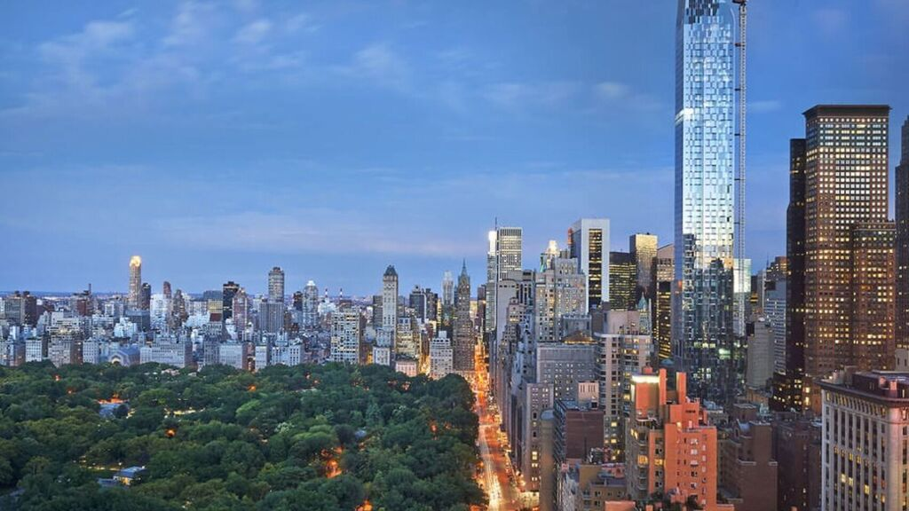

Nueva York incluye 5 distritos que se ubican donde el río Hudson desemboca en el océano Atlántico. En su centro se encuentra Manhattan, un distrito densamente poblado que se encuentra entre los principales centros comerciales, financieros y culturales del mundo. Sus sitios icónicos incluyen rascacielos, como el Empire State Building, y el amplio Central Park. El teatro Broadway se ubica en la zona del Times Square iluminada con neones.
Desde finales del siglo XIX es uno de los centros de la economía mundial. Nueva York está considerada como una ciudad global, por sus influencias a nivel mundial en los medios de comunicación, en la política, en la educación, en la arquitectura, en el entretenimiento, las artes y la moda. La influencia artística y cultural de la ciudad es de las más fuertes del mundo. En esta ciudad se encuentra la sede central de la Organización de las Naciones Unidas. La gran relevancia de la ciudad a muchos niveles la convierte, junto a Moscú, Pekín, Londres, Tokio y París en una de las ciudades con mayores estadísticas del planeta.
La ciudad tiene muchos lugares y edificios reconocidos por todo el mundo. Por ejemplo, la estatua de la Libertad, ubicada en la isla homónima, y la isla de Ellis, que recibió a millones de inmigrantes que llegaban a Estados Unidos a finales del siglo XIX y comienzos del XX. Wall Street ha sido uno de los principales centros mundiales de finanzas desde la Segunda Guerra Mundial y es la sede de la Bolsa de Nueva York. La ciudad también ha concentrado a muchos de los edificios más altos del mundo, entre los que se encuentran el edificio Empire State, el One World Trade Center, el edificio Chrysler, el 432 Park Avenue, la Trump Tower, el edificio Seagram y anteriormente las torres gemelas del World Trade Center, que fueron derribadas en los atentados del 11 de septiembre de 2001.
El tipo de edificio más asociado a la ciudad de Nueva York es el rascacielos. Nueva York tiene 883 edificios de este tipo, una de las mayores concentraciones en el mundo. Rodeada principalmente por agua, la densidad residencial de la ciudad y el alto valor del terreno en los distritos comerciales hicieron que apareciese una de las más grandes colección de edificios de oficinas y torres residenciales del mundo.

Nueva York tiene importantes edificios en un amplio rango de estilos arquitectónicos. Estos incluyen el edificio Woolworth (1913), de estilo neogótico. En 1916 una resolución municipal marcó un mínimo espacio obligatorio entre los edificios y la línea de calle, con el fin de que el sol llegase a las calles. El diseño art decó del edificio Chrysler (1930) refleja estos nuevos requerimientos. El edificio está considerado por muchos historiadores y arquitectos como el mejor de la ciudad, con su ornamentación distintiva, compuesta por águilas y una iluminación en forma de V. Por otro lado, un importante ejemplo del Estilo Internacional en los Estados Unidos es el edificio Seagram (1957). Uno de los edificios más históricos es el Edificio E. V. Haughwout.
Nueva York tiene más de 113 km² de parques y 23 kilómetros de playas públicas.
El Museo Metropolitano de Arte es el más famoso de Manhattan. Con sus más de dos millones de obras,153 sus 130 000 m² y sus 4,5 millones de visitantes anuales, hacen que el MET se sitúe entre los museos más grandes del mundo. Otros museos, dispersos por toda la ciudad, proponen igualmente colecciones de arte generalistas (la Colección Frick, el museo Brooklyn, el Museo de Arte de Queens) o especializados (The Cloisters en el arte de la Edad Media; el American Folk Art Museum y el Whitney Museum of American Art en el arte estadounidense). El arte contemporáneo está representado por instituciones como el Museo Solomon R. Guggenheim, el Museo de Arte Moderno o el Nuevo Museo de Arte Contemporáneo.
Nueva York tiene equipos en las cinco principales ligas deportivas de Norteamérica, cada uno de los cuales también tiene su sede en la ciudad.
El béisbol es el deporte más popular entre sus habitantes. Ha habido catorce Series Mundiales disputadas entre equipos locales a las que se suele llamar las Series del Metro. Nueva York es una de las cinco áreas metropolitanas de Estados Unidos (las otras son Chicago, Washington-Baltimore, Los Ángeles y el área de la bahía de San Francisco) que tiene dos equipos de béisbol. Los dos equipos que actualmente están en las Grandes Ligas de Béisbol son los New York Yankees y los New York Mets, que mantienen una rivalidad posiblemente equiparable con aquella entre los Yankees y los Boston Red Sox. Los Yankees han obtenido 27 títulos, mientras que los Mets lo lograron en dos ocasiones. La ciudad también era el hogar de los New York Giants (ahora los San Francisco Giants) y los Brooklyn Dodgers (actualmente conocidos como Los Angeles Dodgers). Ambos equipos se mudaron a California en 1958. También hay dos equipos en las ligas menores, los Staten Island Yankees y los Brooklyn Cyclones.
Nueva York es un centro mundial para las industrias de la televisión, la publicidad, la música, la prensa y las publicaciones de libros. Algunos de los grupos mediáticos de la ciudad son Time Warner, News Corporation, Hearst Corporation y Viacom. Siete de las ocho principales redes de agencias de publicidad tienen su sede en la ciudad, al igual que tres de las cuatro grandes productoras discográficas. Un tercio de las películas independientes estadounidenses se producen en Nueva York. Más de 200 periódicos y 350 revistas tienen una oficina en la ciudad y la industria editorial emplea alrededor de 25 000 personas.
En los Estados Unidos se celebran numerosas fiestas, que provienen de la tradición de este joven país o de las culturas de las que provienen sus habitantes. No todas estas celebraciones implican un día festivo en el sentido de que las personas tengan un día libre en sus trabajos. Los días festivos federales son seguidos en muchos estados, pero cada uno tiene potestad para marcar su propio calendario de vacaciones y días festivos.